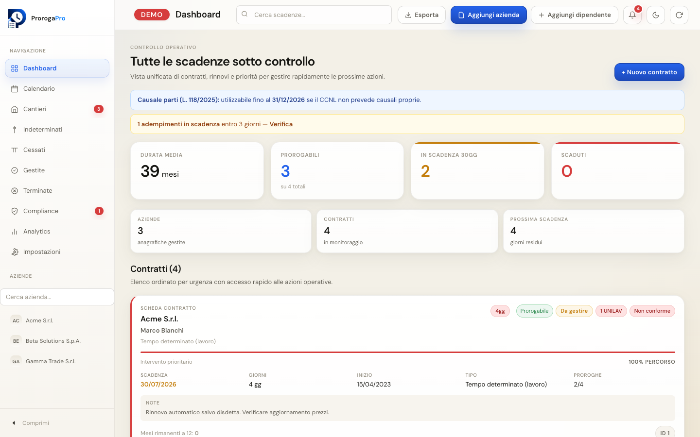
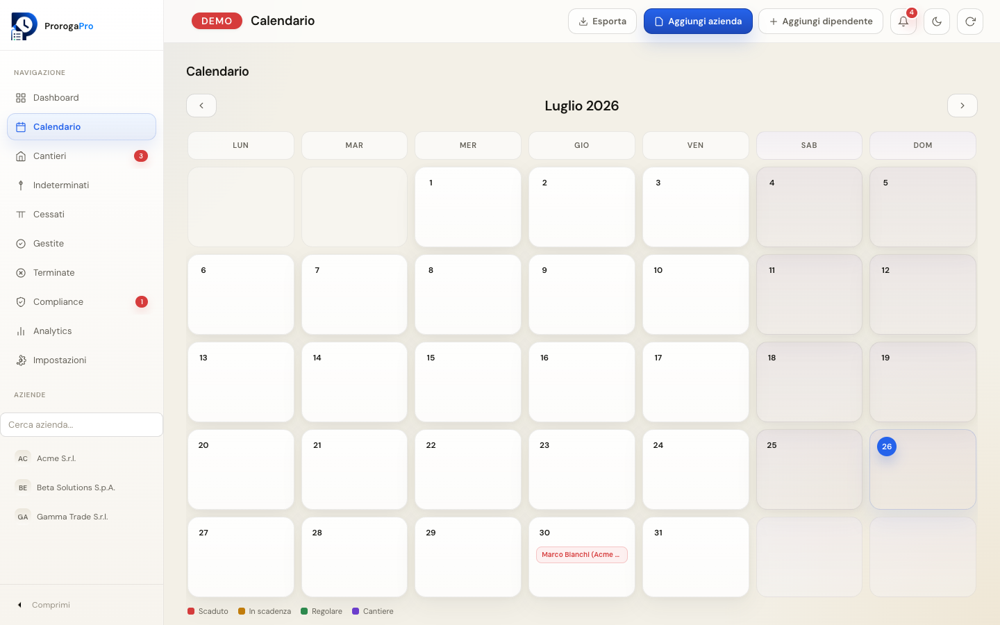
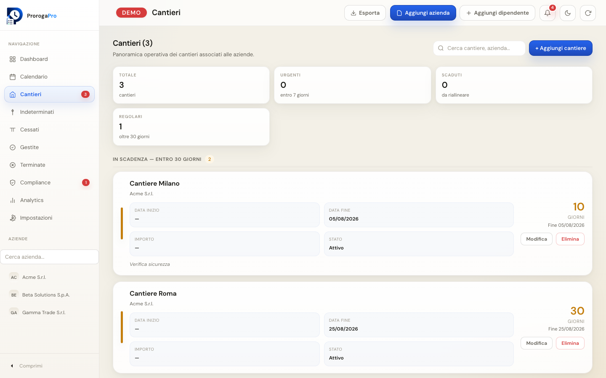
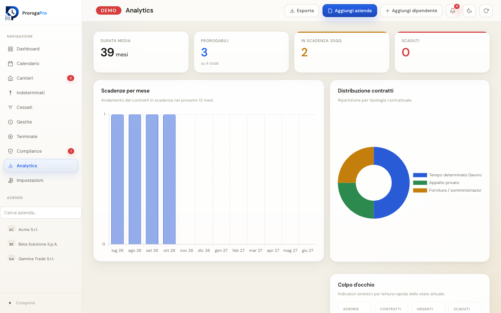
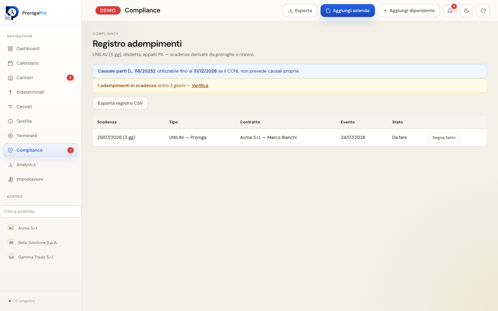

PMI e imprese
Uffici amministrativi, HR e direzione che gestiscono decine o centinaia di rapporti contrattuali.
- Tempo determinato e rinnovi
- Appalti privati e forniture B2B
- Cantieri con scadenze dedicate
ProrogaPro centralizza contratti, cantieri, alert e adempimenti normativi in un'unica dashboard pensata per chi gestisce personale, appalti e forniture ogni giorno.

Target
Progettata per organizzazioni che devono tenere sotto controllo molte scadenze, spesso con vincoli di legge su proroghe e comunicazioni obbligatorie.
Uffici amministrativi, HR e direzione che gestiscono decine o centinaia di rapporti contrattuali.
Commercialisti, consulenti del lavoro e studi legali che assistono più clienti su proroghe e compliance.
Imprese edili, facility, servizi e somministrazione con contratti legati a commesse e cantieri.
* KPI obiettivo indicativo nei primi 90 giorni di utilizzo (clienti Growth)
Prodotto
Schermate reali dalla piattaforma — nessun mockup generico.
Vedi subito cosa scade, cosa è urgente e quali contratti sono prorogabili. Metriche, barre di avanzamento e badge di stato ti guidano nelle azioni del giorno.
Distribuisci le scadenze nel tempo e pianifica rinnovi, disdette e comunicazioni con una vista mensile chiara.

Ogni azienda può avere cantieri con scadenze autonome: documenti, fine commessa, controlli periodici.

Grafici su tipologie contrattuali, scadenze mensili e distribuzione del rischio per supportare il management.

Compliance
Il modulo compliance traduce la normativa operativa in checklist e alert — non sostituisce il parere legale, ma evita dimenticanze costose.
ProrogaPro controlla limiti di durata, numero proroghe, causali art. 19 e crea automaticamente task UNILAV entro 5 giorni da proroga, rinnovo o cessazione.

Workflow
Dalla registrazione del contratto all'export per archivio o cliente — in quattro passaggi.
Manualmente, via Excel o import backup JSON. Categoria legale, causale e date di preavviso inclusi.
Email automatiche o mailto, notifiche push e badge in app quando avvicini scadenze o disdette.
Proroga o rinnovo guidato: verifica limiti, stop-and-go e creazione task UNILAV se necessario.
Excel, PDF, CSV, dossier proroga e backup completo per audit interni o consegna al cliente.
Registrati in pochi minuti e importa i tuoi contratti. Preferisci esplorare prima? Apri la demo pubblica senza account.